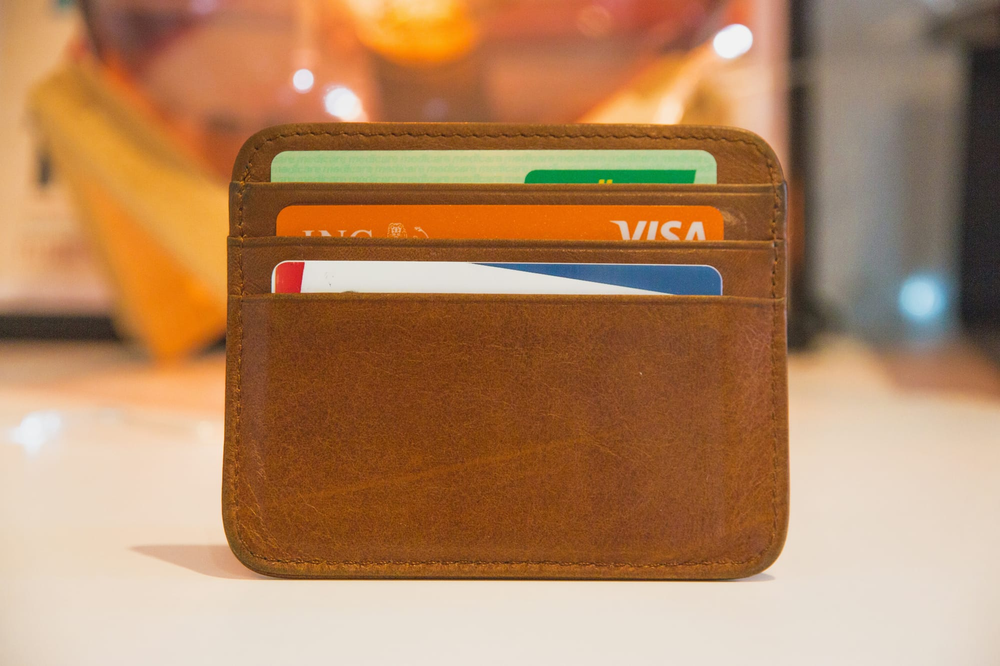

Mejores cuentas money market en 2027: cuenta vs. fondo
Cuenta money market (asegurada) frente a fondo money market (sin seguro): Sallie Mae, Ally y cómo revisar el rendimiento a 7 días de un fondo.
Z Zar · 28 de noviembre de 2026 — 15 min de lectura

Una cuenta money market es un depósito en un banco o cooperativa asegurado por la FDIC o la NCUA (hasta $250,000 por titular); un fondo money market es una inversión sin seguro que puede perder valor. Al 28 de noviembre de 2026, Sallie Mae muestra 3.60% APY y Ally 3.20%, ambos variables y muy por encima del promedio nacional de 0.64% de la FDIC para cuentas money market.
Parte de nuestra Budget & Debt Guide (guía de presupuesto y deudas, en inglés)
Esta guía explica los dos productos que la gente confunde bajo el nombre «money market» y luego compara las cuentas y las opciones de efectivo que pudimos verificar en las páginas de los propios proveedores. Las tasas de estas cuentas son variables, así que toma cada APY de abajo como una foto con fecha y revisa la tasa vigente antes de abrir cualquier cuenta.
| Opción | Qué es | Seguro | Tasa (variable) | Mínimo / acceso |
|---|---|---|---|---|
| Sallie Mae Money Market Account | Cuenta de depósito bancaria | FDIC, hasta $250,000 por depositante | 3.60% APY, según la página de Sallie Mae el 28 de noviembre de 2026 (la página indica que es válida al 30 de noviembre de 2026) | Sin mínimo para abrir; sin cargo mensual de mantenimiento |
| Ally Bank Money Market Account | Cuenta de depósito bancaria | FDIC, hasta el máximo que permite la ley | 3.20% APY al 24 de noviembre de 2026 | Sin saldo mínimo para ganar el APY; $0 de cargo mensual; tarjeta de débito y cheques |
| Vanguard Cash Plus Account | Cuenta de efectivo de corretaje (sweep bancario o fondos money market de Vanguard) | Sweep bancario: FDIC, hasta $250,000 por categoría de titularidad en cada banco del programa. Fondos money market: sin seguro de la FDIC | No la citamos: la página de Vanguard no mostraba una tasa vigente cuando la revisamos | $0 de mínimo para el sweep bancario; $3,000 de mínimo por fondo money market de Vanguard |
| Wealthfront Cash Account | Cuenta de efectivo repartida entre bancos del programa | FDIC mediante los bancos del programa: hasta $8 millones (individual), $250,000 en cada banco | 3.55% APY base al 13 de noviembre de 2026 (no es una cuenta money market bancaria) | Consulta las condiciones en la página de Wealthfront |
¿Qué es una cuenta money market?
Una cuenta money market (MMA, por sus siglas en inglés) es una cuenta de depósito en un banco o cooperativa de crédito que suele pagar más que una cuenta de ahorros básica. La Oficina para la Protección Financiera del Consumidor (CFPB) indica que estas cuentas están aseguradas por la FDIC o la NCUA hasta $250,000 por titular o titulares conjuntos. Ese seguro es la diferencia que importa, porque es lo que protege tu capital si la institución quiebra.
Características principales:
- Suele pagar más que una cuenta de ahorros común, con una tasa variable que el banco puede cambiar
- Asegurada por la FDIC (bancos) o la NCUA (cooperativas de crédito), hasta $250,000 por depositante, por institución asegurada y por categoría de titularidad
- Con frecuencia limita cuántas transacciones puedes hacer con cheque, tarjeta de débito o transferencia electrónica; la CFPB señala que los retiros en cajeros automáticos y en persona generalmente son ilimitados
- A menudo incluye tarjeta de débito o cheques
Cuenta money market vs. fondo money market
Las cuentas money market son distintas de los fondos money market. Un fondo money market es una inversión que venden las casas de corretaje y las administradoras de fondos, regulada por la SEC, que compra valores a corto plazo. La CFPB lo describe como una inversión, no como una cuenta de ahorros ni de cheques. La FDIC y la NCUA no lo aseguran, y la SIPC, que cubre el caso de que quiebre una casa de corretaje, «no protege contra la disminución del valor de tus valores». Los fondos buscan mantener un precio estable de $1.00 por acción, pero sus prospectos aclaran que eso no está garantizado y que invertir en el fondo puede hacerte perder dinero. Por eso «cero riesgo» describe una cuenta asegurada hasta el límite de cobertura, no los fondos money market, y es la razón por la que cambiamos el título de este artículo.
- Dónde revisar una cuenta money market: la página del propio banco muestra el APY, el mínimo y las comisiones, y el BankFind de la FDIC o el buscador de cooperativas de la NCUA confirma que la institución está asegurada.
- Dónde revisar un fondo money market: la página del fondo o su prospecto muestra el rendimiento a 7 días (los ingresos de los últimos siete días, expresados en términos anuales) y la razón de gastos (expense ratio: la comisión anual como porcentaje de los activos). El rendimiento a 7 días no es una tasa garantizada.
Mejores cuentas money market en 2027
Descarga gratis
Descarga el PDF del FI Checklist de 6 páginas
Una hoja de ruta hacia la independencia financiera en diez pasos. Descarga gratuita. Checklist en inglés, PDF de 6 páginas.
Descargar el PDFSin registro.
1. Vanguard Cash Plus Account (revisa la tasa vigente)
La Cash Plus Account de Vanguard es una cuenta de efectivo de corretaje, no una cuenta money market bancaria. Su sweep bancario mantiene tu efectivo en uno o más bancos del programa, donde está asegurado por la FDIC hasta $250,000 por categoría de titularidad asegurable en cada banco del programa, sujeto a los límites y condiciones que indica Vanguard. Vanguard también ofrece sus propios fondos money market dentro de la cuenta, y esos no están asegurados por la FDIC. La página de Vanguard indica $0 de mínimo para el sweep bancario y $3,000 por cada fondo money market. No citamos una tasa: la página no mostraba un APY vigente cuando la revisamos, y eliminamos la cifra anterior de 4.70% y la afirmación anterior de $1.25 millones de cobertura porque no pudimos confirmar ninguna.
Ideal para: inversionistas de Vanguard que quieren tener el efectivo junto a sus inversiones. Ten claro cuál de las dos opciones de efectivo tienes, porque el seguro es distinto.
2. Sallie Mae Money Market Account: 3.60% APY
La página de Sallie Mae muestra un APY de 3.60% el 28 de noviembre de 2026 (variable, y puede cambiar después de abrir la cuenta). Indica que no hay depósito mínimo para abrirla ni cargos mensuales de mantenimiento, y que los depósitos están asegurados por la FDIC hasta $250,000 por depositante.
Ideal para: quienes quieren una cuenta money market bancaria sin mínimo y sin cargo mensual.
3. Ally Bank Money Market Account: 3.20% APY
La página de Ally muestra 3.20% APY, vigente al 24 de noviembre de 2026 (variable). No hay saldo mínimo para ganar el APY, el cargo mensual de mantenimiento es de $0, y la cuenta incluye tarjeta de débito y cheques. La salvedad es el límite de transacciones: Ally cuenta juntas las transferencias en línea y móviles, los cheques y las compras con tarjeta de débito, 10 por ciclo de estado de cuenta. Ally dice que no cobra cargo por excederlo, pero cerrará la cuenta si superas el límite de forma habitual. Los depósitos son ilimitados, y Ally te reembolsa hasta $10 por ciclo de estado de cuenta en cargos de otros cajeros automáticos.
Ideal para: quienes quieren tarjeta de débito y cheques en una cuenta money market y se mantendrán por debajo del tope de transacciones.
También en la tabla: Wealthfront Cash Account
Wealthfront no es una cuenta money market bancaria. Reparte los depósitos entre bancos del programa, y así llega a los $8 millones de elegibilidad de seguro de la FDIC que indica (cada banco aporta sus propios $250,000). El APY de 3.55% de nuestra tabla es su tasa base al 13 de noviembre de 2026; Wealthfront puede cambiarla, y pueden aplicarse bonos promocionales adicionales que no citamos.
Eliminada: Discover Money Market Account (ya no figura)
Quitamos a Discover de las recomendaciones. La página de money market de Discover ahora redirige a la página de ahorros de Capital One, que solo lista 360 Performance Savings, 360 CDs y Kids Savings, sin ninguna cuenta money market. La página de Capital One también señala que las cuentas de depósito de Capital One y Discover abiertas a partir del 18 de mayo de 2025 se suman para los límites de cobertura de la FDIC. Si tienes una cuenta Discover más antigua, revisa los términos de tu cuenta.
Eliminada: CIT Bank Platinum Savings (es una cuenta de ahorros)
Platinum Savings es una cuenta de ahorros, no una cuenta money market, así que no correspondía a esta lista. Tampoco pudimos leer su tasa y sus niveles actuales en la página de CIT (la página no cargó en nuestra revisión automatizada), por lo que no citamos ninguna cifra. Compárala con otras cuentas de ahorros en nuestra guía de cuentas de ahorro de alto rendimiento.
Cuenta money market vs. cuenta de ahorros de alto rendimiento
Estos dos tipos de cuenta se confunden con frecuencia. Estas son las diferencias clave:
| Característica | Cuenta money market | Cuenta de ahorros de alto rendimiento |
|---|---|---|
| Tasa de interés | Variable; revisa la página del banco (por ejemplo, Sallie Mae 3.60% y Ally 3.20% APY en la tabla de arriba) | Variable; revisa la página del banco |
| Cheques | A menudo sí (Ally incluye cheques) | Normalmente no |
| Tarjeta de débito | A menudo sí (Ally incluye una) | Normalmente no |
| Límites de transacciones | Los fija cada banco; Ally cuenta 10 combinadas por ciclo de estado de cuenta | Los fija cada banco |
| Saldo mínimo | Varía; ninguno en Sallie Mae ni en Ally | Varía según el banco |
| Asegurada por la FDIC | Sí, en un banco asegurado por la FDIC | Sí, en un banco asegurado por la FDIC |
En la práctica, las diferencias son pequeñas. Ambas son cuentas de depósito con el mismo seguro, y la decisión suele reducirse a si quieres poder escribir cheques o usar una tarjeta de débito con tus ahorros. Para ver opciones de ahorro de alto rendimiento, consulta nuestra guía de las mejores cuentas de ahorro de alto rendimiento.
Haz que tu efectivo trabaje mientras planeas
Guarda el efectivo que necesitarás pronto en una cuenta asegurada y compara la tasa cada pocos meses, porque las tasas variables se mueven. Si la cuenta también es tu centro de gastos diarios, compárala con las mejores cuentas de cheques sin comisiones.
Cuándo usar una cuenta money market
Las cuentas money market son una buena opción para:
Fondo de emergencia: quieres el dinero seguro y al alcance. Una cuenta con tarjeta de débito o cheques te permite llegar a él sin esperar una transferencia, siempre que vigiles el límite de transacciones.
Metas de ahorro a corto plazo: ¿estás ahorrando para un viaje, un carro o un pago inicial (down payment) en los próximos 6 a 24 meses? Una cuenta asegurada paga una tasa variable sin exponer el capital al riesgo del mercado.
Efectivo por encima del límite estándar: el monto estándar de seguro de la FDIC es de $250,000 por depositante, por banco y por categoría de titularidad. Los saldos mayores pueden repartirse entre varios bancos o mantenerse mediante un programa sweep que use varios bancos asociados, como Wealthfront (hasta $8 millones entre sus bancos del programa, según Wealthfront).
Efectivo de paso: el dinero que espera entre la venta de una inversión y la compra de otra puede estar mientras tanto en una cuenta asegurada o en una opción de efectivo de corretaje.
Para qué NO sirven las cuentas money market
Crear patrimonio a largo plazo: la tasa es variable y los intereses tributan. El dinero que no vas a tocar en muchos años normalmente va en inversiones, que conllevan riesgo de pérdida.
Ahorros para el retiro: las cuentas con ventajas fiscales, como una Roth IRA o un 401(k), son el lugar habitual para el dinero de retiro a largo plazo. Los intereses de una cuenta money market son ingreso tributable cada año.
Dinero que no necesitarás en cinco años o más: el dinero con un horizonte largo normalmente va en inversiones acordes con tu tolerancia al riesgo, no solo en efectivo.
Mejores opciones de manejo de efectivo en cuentas de corretaje
Opciones de efectivo en corretaje: seguro de la FDIC, rendimiento y liquidez comparados
Cuando dejas efectivo en una cuenta de corretaje, hay tres cosas que revisar: el seguro, el rendimiento y qué tan rápido puedes usar el dinero. El efectivo en corretaje viene en formas distintas, y cada una está asegurada de manera diferente:
- Los programas sweep bancarios mueven tu efectivo a bancos del programa. El seguro de la FDIC aplica en cada banco del programa (hasta $250,000 por categoría de titularidad), sujeto a los límites que indique la casa de corretaje, y cubre únicamente la quiebra de esos bancos. El sweep bancario de Vanguard Cash Plus funciona así.
- Los fondos money market no están asegurados por la FDIC. La SIPC cubre hasta $500,000, incluidos $250,000 en efectivo, si quiebra tu casa de corretaje, pero no protege contra la disminución del valor de tus valores. Los rendimientos cambian a diario. Cifras leídas en las páginas de los propios fondos el 28 de noviembre de 2026:
- Vanguard Federal Money Market Fund (VMFXX): rendimiento SEC a 7 días de 3.93% al 27 de noviembre de 2026; razón de gastos de 0.11% al 19 de diciembre de 2025; inversión mínima de $3,000.
- Fidelity Government Money Market Fund (SPAXX): rendimiento a 7 días de 3.62% al 27 de noviembre de 2026; razón de gastos bruta de 0.42% al 29 de junio de 2026.
- Schwab Prime Advantage Money Fund Investor (SWVXX): rendimiento a 7 días de 3.81% con exenciones (waivers) al 27 de noviembre de 2026; razón de gastos neta de 0.340%; sin mínimo inicial. Es un fondo prime, que puede tener deuda corporativa, a diferencia de los fondos de gobierno de arriba, así que asume otro tipo de riesgo.
- Las cuentas de efectivo que usan bancos del programa (como la de Wealthfront) reparten tus depósitos entre bancos asociados, y cada uno aporta sus propios $250,000 de cobertura de la FDIC. Wealthfront muestra 3.55% APY al 13 de noviembre de 2026 y dice que esa tasa puede cambiar.
Como los rendimientos de los fondos money market se mueven con las tasas a corto plazo y las tasas de los sweeps bancarios las fija la casa de corretaje, ambos pueden diferir mucho. Compara el rendimiento a 7 días y la razón de gastos del fondo con la tasa del sweep que paga tu casa de corretaje, y decide si la falta de seguro de la FDIC en el fondo es aceptable para ese dinero.
Una cuenta de 3% a 4% es útil, pero si arrastras un saldo de tarjeta de crédito con intereses altos, pagar primero la deuda de intereses altos (en inglés) suele rendir más: aquí te explicamos por qué.
Preguntas frecuentes
¿Es segura una cuenta money market?
En un banco asegurado por la FDIC o una cooperativa de crédito asegurada por la NCUA, sí, hasta el límite: $250,000 por depositante, por institución asegurada y por categoría de titularidad. Por encima de eso, o en un fondo money market, el seguro no aplica.
¿Cuál es la diferencia entre una cuenta money market y un fondo money market?
Una cuenta es un depósito en un banco o cooperativa de crédito asegurado por la FDIC o la NCUA. Un fondo es una inversión regulada por la SEC y sin seguro; su precio busca mantenerse en $1.00 pero puede bajar, y su rendimiento a 7 días cambia.
¿Cuánto paga una cuenta money market?
Depende del banco y cambia con el tiempo. El 28 de noviembre de 2026, Sallie Mae mostraba 3.60% APY y Ally 3.20% (al 24 de noviembre). La FDIC publica un promedio nacional para cuentas money market de 0.64% al 16 de noviembre de 2026, así que las tasas varían mucho entre bancos.
¿Puedo escribir cheques desde una cuenta money market?
A menudo sí. Ally incluye cheques y tarjeta de débito. Revisa primero los límites de transacciones del banco, porque los cheques y las compras con tarjeta de débito suelen contar para el límite.
En resumen
Si quieres efectivo asegurado, una cuenta money market en una institución asegurada por la FDIC o la NCUA es un lugar sólido para un fondo de emergencia y ahorros a corto plazo. Revisa el APY vigente antes de abrir una. Para dimensionarlo, la diferencia entre 0.64% (el promedio nacional de la FDIC para cuentas money market) y el 3.60% de Sallie Mae sobre $10,000 es de unos $296 al año en intereses antes de impuestos, si las tasas se mantuvieran igual durante un año, lo cual no ocurrirá.
¿Quieres profundizar? Consulta How to Build Credit From Scratch in 2026 (en inglés).
¿Quieres profundizar? Consulta How to Improve Your Credit Score Fast in 2026 (en inglés).
Las cuentas money market son solo una pieza. Tu cuenta de cheques diaria es otra. Consulta las mejores cuentas de cheques y de efectivo de 2026 y lo que te cuesta en silencio una cuenta de bajo rendimiento.
Descarga gratis: el checklist de independencia financiera en 10 pasos
La hoja de ruta exacta que seguí para construir mi base financiera. Checklist en inglés, PDF de 6 páginas, gratis y sin registro.
Descargar el checklist gratis (en inglés)
Qué cambió
- Título y apertura: el título anterior prometía «cero riesgo». Eso vale solo para cuentas aseguradas hasta el límite de cobertura, no para los fondos money market, así que ahora el artículo separa las cuentas money market (aseguradas por la FDIC o la NCUA) de los fondos money market (sin seguro, regulados por la SEC) y lo dice en el primer párrafo.
- Tasas: el artículo anterior citaba 4.70%, 4.65%, 4.50%, 4.40% y 4.35% APY. Ahora Sallie Mae muestra 3.60% y Ally 3.20%, ambas con fecha. El promedio nacional de la FDIC para cuentas money market era 0.64% al 16 de noviembre de 2026.
- Discover Money Market: eliminada. Su página ahora redirige a la página de ahorros de Capital One, que no lista ninguna cuenta money market.
- CIT Bank Platinum Savings: eliminada de las recomendaciones. Es una cuenta de ahorros, no una cuenta money market, y no pudimos leer su tasa actual en la página de CIT.
- Vanguard Cash Plus: eliminamos el APY de 4.70% y la afirmación de «$1.25 millones» de la FDIC (no pudimos confirmar ninguno en la página de Vanguard). Ahora el artículo describe lo que indica la página: un sweep bancario con $0 de mínimo y seguro de la FDIC de $250,000 por categoría de titularidad en cada banco del programa, o fondos money market de Vanguard, que no están asegurados.
- Ally: agregamos lo que dice su página sobre el límite de 10 transacciones por ciclo de estado de cuenta (no por mes calendario), la tarjeta de débito y los cheques, y el cargo mensual de $0.
- Eliminamos la afirmación de que estas cuentas suelen permitir «6 transacciones por mes». Cada banco fija sus límites (Ally cuenta 10 por ciclo de estado de cuenta).
- Efectivo en corretaje: reemplazamos los rendimientos anteriores de los fondos («alrededor de 5.0%», «4.5-5.0% a principios de 2026») por los rendimientos a 7 días y las razones de gastos de las páginas de los propios fondos (VMFXX 3.93%, SPAXX 3.62%, SWVXX 3.81%, todos al 27 de noviembre de 2026). Eliminamos la afirmación de 5.0% de Robinhood Gold, los rendimientos de renovación automática de bonos del Tesoro y el ejemplo de «$575 al año», que no pudimos confirmar. La tasa de Wealthfront ahora es 3.55% al 13 de noviembre de 2026. Agregamos cómo revisar el rendimiento a 7 días y la razón de gastos de un fondo.
- Eliminamos la afirmación de que los fondos indexados han rendido «7-10% anual» y el ejemplo de «$415 al año»; el nuevo ejemplo usa el promedio nacional de la FDIC y la tasa actual de Sallie Mae.
- Reemplazamos las calificaciones con estrellas por una tabla comparativa de lo que pudimos verificar.
Fuentes
- Sallie Mae: Money Market Account
- Ally Bank: Money Market Account
- Capital One: cuentas de ahorros (la página de money market de Discover redirige aquí)
- Vanguard: Cash Plus Account
- Vanguard: Federal Money Market Fund (VMFXX), rendimiento SEC a 7 días y razón de gastos
- Fidelity: Government Money Market Fund (SPAXX)
- Schwab Asset Management: Prime Advantage Money Fund Investor (SWVXX)
- Wealthfront: Cash Account
- FDIC: tasas nacionales y topes de tasas
- FDIC: seguro de depósitos
- FDIC: ¿Están aseguradas mis cuentas de depósito?
- NCUA: cobertura del seguro de acciones (share insurance)
- CFPB: ¿Qué es una cuenta money market?
- SIPC: qué protege la SIPC
Última verificación: 28 de noviembre de 2026.